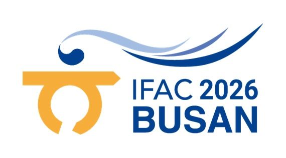
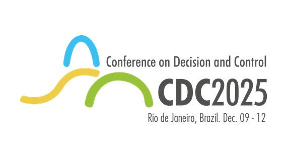
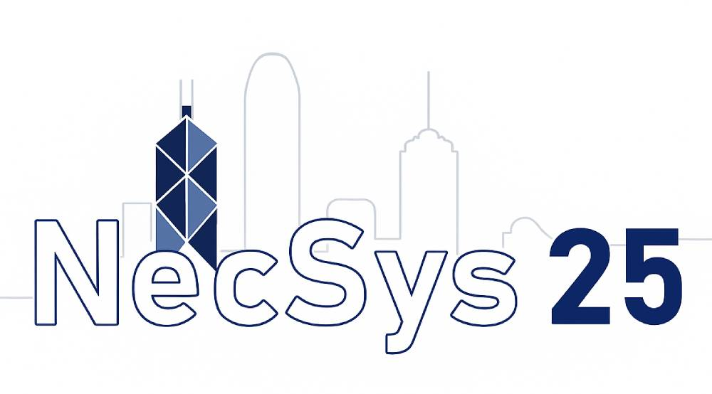
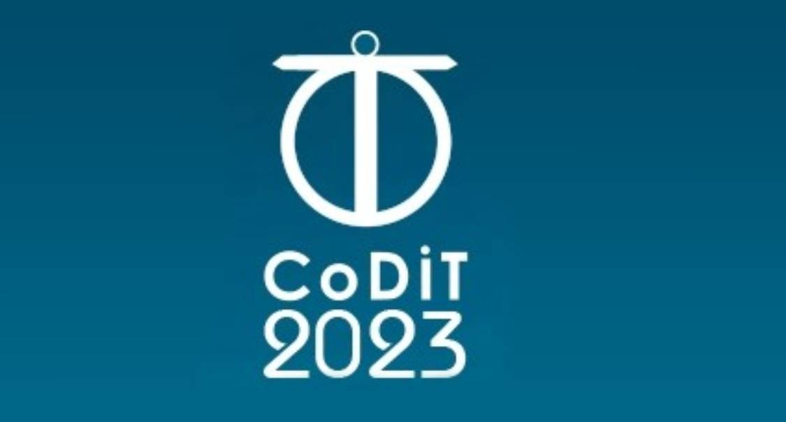

[A04]
ResDyNet: a Residual State-Space Neural Network for Nonlinear System Identification
M. Ledda, D. Deplano, A. Giua, M. Franceschelli
Under review at IEEE Open Journal of Control Systems, 2026
M. Franceschelli, "Consensus Algorithms for Estimation and Discrete Averaging in Networked Control Systems", Ph.D. Thesis, Department of Electrical and Electronic Engineering, University of Cagliari, Italy, March 2011. Advisor: Prof. A. Giua.
M. Ledda, D. Deplano, A. Giua, M. Franceschelli
Under review at IEEE Open Journal of Control Systems, 2026
A. Miele, M. Lippi, M. Franceschelli, C.N. Hadjicostis, A. Gasparri
Under review, 2026
M. Tao, M. Franceschelli, Y. Wei, J. Cao
Under review at IEEE Transactions on Automatic Control, 2026
D. Deplano, S. Grammatico, M. Franceschelli
Under review at IEEE Transactions on Automatic Control, 2026
Manuscript
W. Zhao, D. Deplano, Z. Li, A. Giua, M. Franceschelli
Automatica, 2026 (accepted)
Manuscript
D. Deplano, C. Seatzu, M. Franceschelli
IEEE Transactions on Automation Science and Engineering, 2026
Manuscript
D. Deplano, N. Bastianello, M. Franceschelli, K.H. Johansson
IEEE Control Systems Letters, 2026
Manuscript
A. Miele, M. Lippi, D. Deplano, M. Franceschelli, A. Gasparri
IEEE Control Systems Letters, 2026
Manuscript
D. Deplano, N. Arridu, C. Seatzu, M. Franceschelli
Control Engineering Practice, 2026
Manuscript
D. Deplano, N. Bastianello, M. Franceschelli, K.H. Johansson
IEEE Transactions on Automatic Control, 2026
Manuscript
D. Deplano, M. Franceschelli, A. Giua
IEEE Transactions on Automatic Control, 2026
Manuscript
N. Arridu, M. Lippi, M. Franceschelli, A. Gasparri
IEEE Access, 2025
A. Miele, M. Franceschelli, A. Gasparri
IEEE Control Systems Letters, 2025
N. Bastianello, D. Deplano, M. Franceschelli, K.H. Johansson
IEEE Transactions on Automatic Control, 2025
Manuscript
M. Kaheni, A.V. Papadopoulos, E. Usai, M. Franceschelli
IEEE Transactions on Control Systems Technology, 2024
D. Deplano, M. Franceschelli, A. Giua
IEEE Control Systems Letters, 2024
Manuscript
E. Sebastián, M. Franceschelli, A. Gasparri, E. Montijano, C. Sagüés
IEEE Control Systems Letters, 2024
M. Kaheni, M. Lippi, A. Gasparri, M. Franceschelli
IEEE Transactions on Cybernetics, 2024
G. Oliva, M. Franceschelli, A. Gasparri, A. Scala
IEEE Transactions on Automatic Control, 2024
M. Kaheni, E. Usai, M. Franceschelli
IEEE Transactions on Automation Science and Engineering, 2024
E. Sebastián, E. Montijano, C. Sagüés, M. Franceschelli, A. Gasparri
IEEE Control Systems Letters, 2023
A. Pilloni, M. Franceschelli, A. Pisano, E. Usai
Annual Reviews in Control, 2023
D. Deplano, M. Franceschelli, A. Giua
IEEE Transactions on Automatic Control, 2023
Manuscript
Z.A.Z. Sanai Dashti, G. Oliva, C. Seatzu, A. Gasparri, M. Franceschelli
IEEE Control Systems Letters, 2022
M. Kaheni, A. Pilloni, G. Serra Ruda, E. Usai, M. Franceschelli
IEEE Control Systems Letters, 2023
M. Kaheni, E. Usai, M. Franceschelli
IEEE Control Systems Letters, 2022
D. Deplano, M. Franceschelli, A. Giua
IEEE Transactions on Automatic Control, 2023
Manuscript
M. Santilli, M. Franceschelli, A. Gasparri
Automatica, 2022
M. Santilli, M. Franceschelli, A. Gasparri
IEEE Transactions on Robotics, 2022
D. Deplano, M. Franceschelli, A. Giua, L. Scardovi
IEEE Control Systems Letters, 2021
Manuscript
M. Franceschelli, P. Frasca
IEEE Transactions on Automatic Control, 2021
D. Deplano, M. Franceschelli, S. Ware, R. Su, A. Giua
IEEE Access, 2020
Manuscript
A. Pilloni, M. Franceschelli, A. Pisano, E. Usai
IEEE Transactions on Automatic Control, 2021
D. Deplano, M. Franceschelli, A. Giua
Automatica, 2020
Manuscript
M. Franceschelli, A. Pilloni, A. Gasparri
IEEE Transactions on Control Systems Technology, 2021
A. Pilloni, M. Franceschelli, A. Pisano, E. Usai
Control Engineering Practice, 2019
I. Notarnicola, M. Franceschelli, G. Notarstefano
IEEE Transactions on Automatic Control, 2019
M. Franceschelli, A. Gasparri
Automatica, 2019
M. Franceschelli, A. Giua, C. Seatzu
Nonlinear Analysis: Hybrid Systems, 2017
M. Franceschelli, A. Giua, A. Pisano
IEEE Transactions on Automatic Control, 2017
V. Pilloni, M. Franceschelli, L. Atzori, A. Giua
IEEE Transactions on Control Systems Technology, 2016
M. Franceschelli, A. Giua, C. Seatzu
Automatica, 2015 – conference version presented at IFAC WC 2014, see [C27]
M. Franceschelli, A. Pisano, A. Giua, E. Usai
IEEE Transactions on Automatic Control, 2015
M. Franceschelli, A. Gasparri
IEEE Transactions on Robotics, 2014
M. Franceschelli, D. Rosa, C. Seatzu, F. Bullo
Nonlinear Analysis: Hybrid Systems, 2013 – conference version presented at ADHS 2012, see [C16]
M. Franceschelli, A. Giua, A. Pisano, E. Usai
Nonlinear Analysis: Hybrid Systems, 2013
M. Franceschelli, A. Gasparri, A. Giua, C. Seatzu
Automatica, 2013
N. Orani, A. Pisano, M. Franceschelli, A. Giua, E. Usai
Nonlinear Analysis: Hybrid Systems, 2011 – conference version presented at ADHS 2009, see [C09]
M. Franceschelli, A. Giua, C. Seatzu
IEEE Sensors Journal, 2011
M. Franceschelli, A. Giua, C. Seatzu
Automatica, 2011
M. Franceschelli, A. Giua, C. Seatzu
IEEE Transactions on Automatic Control, 2010
M. Ledda, D. Deplano, A. Giua, M. Franceschelli
IEEE Conference on Decision and Control, 2026 (accepted)
Manuscript
M. Ledda, A. Giua, M. Franceschelli
IEEE International Conference on Automation Science and Engineering, 2026
A. Miele, M. Franceschelli, A. Gasparri
IFAC World Congress, 2026 (accepted)

M. Ledda, D. Deplano, A. Giua, M. Franceschelli
IFAC World Congress, 2026 (accepted)
Manuscript
D. Deplano, N. Bastianello, M. Franceschelli, K.H. Johansson
IFAC World Congress, 2026 (accepted)
Manuscript
M. Ledda, D. Deplano, A. Giua, M. Franceschelli
IEEE Conference on Decision and Control, 2025
Manuscript

M. Tao, Y. Wei, M. Franceschelli, J. Cao
IEEE International Conference on Systems, Man, and Cybernetics, 2025
H. Chakraa, D. Deplano, C. Seatzu, D. Lefebvre, M. Franceschelli
IEEE International Conference on Automation Science and Engineering, 2025
Manuscript
D. Deplano, N. Bastianello, M. Franceschelli, K.H. Johansson
IFAC Conference on Networked Systems (NecSys), 2025
Manuscript

D. Deplano, S. Grammatico, M. Franceschelli
European Control Conference, 2025
Manuscript
D. Deplano, M. Franceschelli, A. Giua
IEEE Conference on Decision and Control, 2024
Manuscript
M.A.M. Messilem, D. Deplano, M. Franceschelli, E. Usai, R. Carli
IEEE International Conference on Automation Science and Engineering, 2024
Manuscript
J.J. Moré, D. Deplano, A. Pilloni, A. Pisano, M. Franceschelli
IEEE International Conference on Automation Science and Engineering, 2024
Manuscript
W. Zhao, D. Deplano, Z. Li, A. Giua, M. Franceschelli
IEEE International Conference on Automation Science and Engineering, 2024
Manuscript
D. Deplano, C. Seatzu, M. Franceschelli
IEEE International Conference on Automation Science and Engineering, 2024
Manuscript
N. Ran, J. Hao, Z. He, M. Franceschelli, C. Seatzu
International Conference on Control, Decision and Information Technologies, 2024
A. Furchì, M. Franceschelli, A. Gasparri
Mediterranean Conference on Control and Automation, 2024
D. Deplano, N. Bastianello, M. Franceschelli, K.H. Johansson
IEEE Conference on Decision and Control, 2023
Manuscript
D. Deplano, M. Franceschelli, C. Seatzu
International Conference on Control, Decision and Information Technologies, 2023
Manuscript

D. Deplano, C. Congiu, A. Giua, M. Franceschelli
IFAC World Congress, 2023
Manuscript
Z.A.Z. Sanai Dashti, D. Deplano, C. Seatzu, M. Franceschelli
IEEE Conference on Decision and Control, 2022
Manuscript
D. Deplano, M. Franceschelli, A. Giua
IFAC Conference on Networked Systems (NecSys), 2022
Manuscript
D. Deplano, M. Franceschelli, A. Giua
IEEE Conference on Decision and Control, 2021
Manuscript
M. Kaheni, E. Usai, M. Franceschelli
IEEE International Conference on Automation Science and Engineering, 2021
D. Deplano, M. Franceschelli, A. Giua
European Workshop on Advanced Control and Diagnosis, 2019
Manuscript
M. Santilli, M. Franceschelli, A. Gasparri
IEEE Conference on Decision and Control, 2019
Z.A.Z. Sanai Dashti, C. Seatzu, M. Franceschelli
IEEE Conference on Decision and Control, 2019
D. Deplano, M. Franceschelli, A. Giua
IEEE Conference on Decision and Control, 2018
Manuscript
M. Franceschelli, P. Frasca
IEEE Conference on Decision and Control, 2018
A. Pilloni, M. Franceschelli, A. Pisano, E. Usai
International Workshop on Variable Structure Systems, 2018
G. Cavone, M. Dotoli, N. Epicoco, M. Franceschelli, C. Seatzu
IFAC Workshop on Discrete Event Systems, 2018
M. Franceschelli, A. Pilloni, A. Gasparri
European Control Conference, 2018
A. Pisano, M. Franceschelli, A. Pilloni, Y. Shtessel, E. Usai
IFAC World Congress, 2017
M. Franceschelli, A. Gasparri
IEEE Conference on Decision and Control, 2016
I. Notarnicola, M. Franceschelli, G. Notarstefano
IEEE Conference on Decision and Control, 2016
A. Pilloni, A. Pisano, M. Franceschelli, E. Usai
IEEE Conference on Decision and Control, 2016
A. Pilloni, A. Pisano, M. Franceschelli, E. Usai
International Workshop on Variable Structure Systems, 2016
A. Pilloni, A. Pisano, M. Franceschelli, E. Usai
International Workshop on Variable Structure Systems, 2016
M. Franceschelli, A. Gasparri, A. Pisano
European Control Conference, 2016
M. Franceschelli, A. Giua, C. Seatzu
IFAC Conference on Analysis and Design of Hybrid Systems, 2015
M.P. Fanti, A.M. Mangini, M. Franceschelli, G. Pedroncelli, W. Ukovich
IEEE International Conference on Systems, Man, and Cybernetics, 2015
M. Zareh, D.V. Dimarogonas, M. Franceschelli, K.H. Johansson, C. Seatzu
International Conference on Control, Decision and Information Technologies, 2014
C. López-Limón, M. Franceschelli, C. Seatzu, A. Ramírez-Treviño
IEEE Conference on Decision and Control, 2014
M. Zareh, D.V. Dimarogonas, M. Franceschelli, K.H. Johansson, C. Seatzu
IEEE International Conference on Emerging Technologies and Factory Automation, 2014
A. Pilloni, M. Franceschelli, A. Pisano, E. Usai
International Workshop on Variable Structure Systems, 2014
M. Franceschelli, A. Giua, C. Seatzu
IFAC World Congress, 2014 – journal version in Automatica, see [J10]
M. Franceschelli, A. Giua, A. Pisano
American Control Conference, 2014
M.P. Fanti, M. Franceschelli, A.M. Mangini, G. Pedroncelli, W. Ukovich
IEEE Conference on Decision and Control, 2013
A. Pilloni, A. Pisano, M. Franceschelli, E. Usai
IEEE Conference on Decision and Control, 2013
M. Franceschelli, A. Pilloni, A. Pisano, A. Giua, E. Usai
IEEE Conference on Decision and Control, 2013
M. Zareh, C. Seatzu, M. Franceschelli
IFAC Conference on Networked Systems (NecSys), 2013
M. Zareh, C. Seatzu, M. Franceschelli
IEEE International Conference on Networking, Sensing and Control, 2013
A. Gasparri, G. Oliva, M. Franceschelli, S. Panzieri
International Workshop on Wireless Sensor, Actuator and Robot Networks (IEEE MASS), 2012
D. Rosa, M. Franceschelli, C. Seatzu, F. Bullo
IFAC Conference on Networked Systems (NecSys), 2012
M. Franceschelli, A. Gasparri
IEEE Conference on Decision and Control, 2012
M. Franceschelli, A. Pisano, A. Giua, E. Usai
IFAC Conference on Analysis and Design of Hybrid Systems, 2012
M. Franceschelli, D. Rosa, C. Seatzu, F. Bullo
IFAC Conference on Analysis and Design of Hybrid Systems, 2012 – journal version in Nonlinear Analysis: Hybrid Systems, see [J07]
D. Rosa, M. Franceschelli, A. Giua
American Control Conference, 2012
V. Pilloni, M. Franceschelli, L. Atzori, A. Giua
IEEE International Conference on Communications, 2012
M. Franceschelli, S. Martini, M. Egerstedt, A. Bicchi, A. Giua
IEEE Conference on Decision and Control, 2010
M. Franceschelli, A. Gasparri
IEEE International Conference on Robotics and Automation, 2010
M. Franceschelli, A. Gasparri, A. Giua, G. Ulivi
IEEE International Conference on Robotics and Automation, 2010
M. Franceschelli, A. Gasparri, A. Giua, C. Seatzu
IEEE Conference on Decision and Control, 2009
N. Orani, A. Pisano, M. Franceschelli, A. Giua, E. Usai
IFAC Conference on Analysis and Design of Hybrid Systems, 2009 – journal version in Nonlinear Analysis: Hybrid Systems, see [J04]
M. Franceschelli, A. Giua, C. Seatzu
IEEE International Conference on Automation Science and Engineering, 2009
M. Franceschelli, A. Giua, C. Seatzu
IFAC Conference on Networked Systems (NecSys), 2009
M. Franceschelli, A. Giua, C. Seatzu
IEEE Multi-conference on Systems and Control, 2009
M. Franceschelli, M. Egerstedt, A. Giua, C. Mahulea
American Control Conference, 2009
M. Franceschelli, A. Gasparri
American Control Conference, 2009
M. Franceschelli, A. Giua, C. Seatzu
American Control Conference, 2009
M. Franceschelli, M. Egerstedt, A. Giua
American Control Conference, 2008
M. Franceschelli, A. Giua, C. Seatzu
IEEE Conference on Decision and Control, 2007